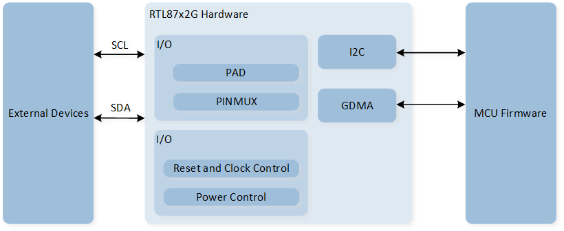
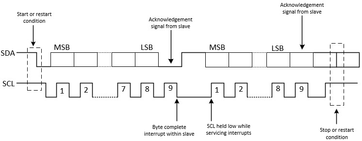
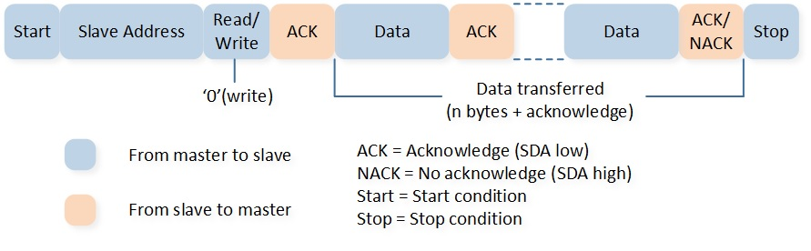
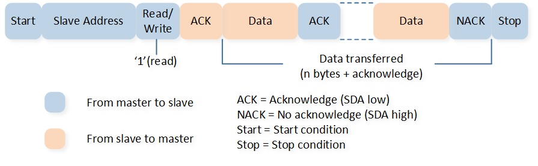
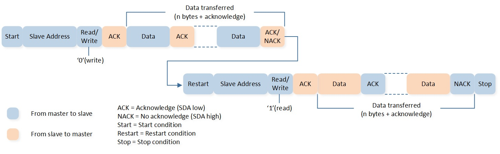
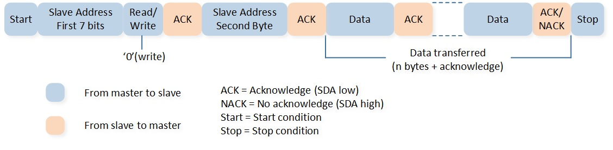
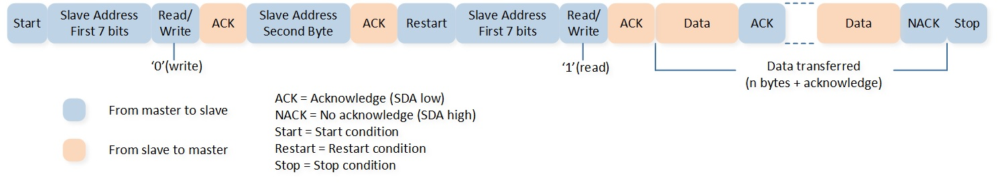
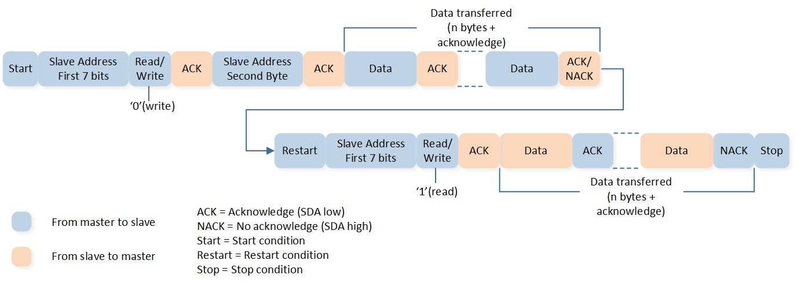
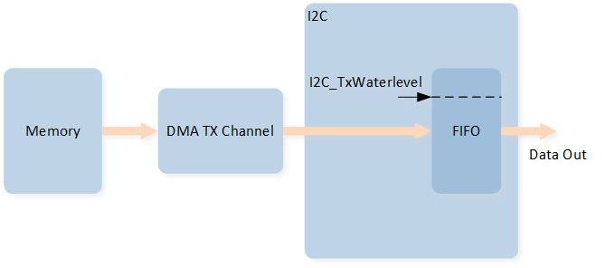
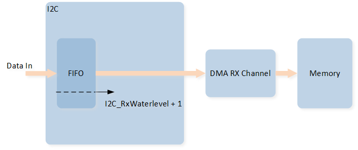

I2C
Sample List
This chapter introduces the details of the I2C sample. The RTL87x2G provides the following samples for the I2C peripheral.
Functional Overview
The I2C bus is a two-wire serial interface, consisting of a serial data line (SDA) and a serial clock line (SCL). These two lines are used to carry information between devices connected to the bus.
Each device on the I2C bus has a unique address and can functiong as either a transmitter or a receiver, depending on its function.
Devices can also be considered masters or slaves when performing data transfers. A master device is responsible for initiating a data transfer on the bus and generating the clock signals to permit that transfer. Once a master initiates a transfer, any device addressed during this operation is considered a slave.
Feature List
Up to 4 I2C.
Two-wire I2C serial interface: consists of a serial data line (SDA) and a serial clock (SCL).
Support master and slave mode.
Support 7/10-bit addressing mode.
Support standard mode (0 to 100Kb/s), fast mode (less than or equal to 400Kb/s) and fast mode plus (less than or equal to 1000Kb/s).
Support 40MHz clock source.
Interrupt or polling mode operation.
Transmit FIFO depth: 24.
Receive FIFO depth: 24.
Support GDMA transfer.
Block Diagram
Here is the block diagram of I2C. By invoking the MCU Firmware, functions such as I2C Write/Read are implemented. I2C encapsulates data into protocol frames, and the hardware automatically generates standard-compliant SCL/SDA timing waveforms to achieve communication with external devices.

System Block Diagram of I2C
Transfer Protocol
Each byte sent on the SDA line must be 8 bits. There is no limit to the number of bytes that can be sent per transfer, and each byte must be followed by a response bit. The most significant bit (MSB) of the data is transmitted first.
If the slave needs to complete some other functions, such as an internal interrupt service routine, it can receive or send the next complete data byte. The clock line SCL can be kept low to force the master to enter the wait state. When the slave is ready to receive the next data byte and release the clock line SCL, the data transfer continues.

Schematic Diagram of I2C Transmission Protocol
I2C Command
A transfer is started when the first data writing into the TX FIFO and hardware would send command automatically. The transmission would be terminated after the Master issues a STOP. The command format for writing into the I2C TX FIFO is as follows:
Function Description |
BIT[31:11] |
BIT[10] |
BIT[9] |
BIT[8] |
BIT[7:0] |
|---|---|---|---|---|---|
Command Format |
Reserved |
Restart |
Stop |
Command |
Data |
Write data |
0 |
0 |
0 |
0 |
xxxxxxxx |
Write the last data |
0 |
0 |
1 |
0 |
xxxxxxxx |
Read data |
0 |
0 |
0 |
1 |
0 |
Read the last data |
0 |
0 |
1 |
1 |
0 |
Master Communication Mode
The I2C master device supports the following communication modes: Master Write, Master Read, and Master Repeat Read. Detailed sample for three communication modes is provided in LoopBack sample.
Users can set the I2C device mode to Master mode by setting the parameters I2C_InitTypeDef::I2C_DeviveMode to I2C_DeviveMode_Master, and set to I2C_DeviveMode_Slave for slave mode.
The communication timing for the above three modes will be introduced below in both 7-bit and 10-bit address mode.
7-Bit Addressing Mode
Master Write
The API I2C_MasterWrite() implements the I2C master write data function in polling mode.
Master-transmitter transmits to slave-receiver with a 7-bit slave address. The transfer direction is not changed. All data is transmitted in byte format, with no limit on the number of bytes transferred per data transfer. After the master sends the address and read/write bit or the master transmits a byte of data to the slave, the slave-receiver must respond with the acknowledge signal. When a slave-receiver does not respond with an ACK pulse, the master aborts the transfer by issuing a stop condition. The slave must leave the SDA line high so that the master can abort the transfer.
{kind=link}

Master Write in 7-Bit Addressing Mode
Master Read
The API I2C_MasterRead() implements the I2C master read data function in polling mode.
In the first response, master-transmitter becomes master-receiver, and slave-receiver becomes slave-transmitter, and the first response is still generated by the slave. If the master is receiving data, the master responds to the slave-transmitter with an acknowledge pulse after a byte of data has been received, except for the last byte. This (NACK) is the way the master-receiver notifies the slave-transmitter that this is the last byte. The slave-transmitter relinquishes the SDA line after detecting the no acknowledge (NACK) so that the master can issue a stop condition.
{kind=link}

Master Read in 7-Bit Addressing Mode
Master Repeat Read
The API I2C_RepeatRead() implements the I2C master write and then read data function in polling mode.
When performing a write-before-read operation, both the start condition and the slave address are sent repeatedly, but the read/write bit is reversed.
{kind=link}

Master Repeat Read in 7-Bit Addressing Mode
10-Bit Addressing Mode
Master Write
The API I2C_MasterWrite() implements the I2C master write data function in polling mode.
Master-transmitter transmits to slave-receiver with a 10-bit slave address. The transfer direction is not changed.
{kind=link}

Master Write in 10-Bit Addressing Mode
Master Read
The API I2C_MasterRead() implements the I2C master read data function in polling mode.
Master-transmitter transmits to slave-receiver with a 10-bit slave address. The transfer direction is changed after the second read/write bit, master-transmitter becomes master-receiver, and slave-receiver becomes slave-transmitter.
{kind=link}

Master Read in 10-Bit Addressing Mode
Master Repeat Read
The API I2C_RepeatRead() implements the I2C master write and then read data function in polling mode.
The master sends data to the slave and then reads data from the same slave. The transfer direction is changed after the second read/write bit.
{kind=link}

Master Repeat Read in 10-Bit Addressing Mode
I2C GDMA
I2C GDMA TX
During the I2C transmission, a GDMA burst transfer is triggered when the amount of data in the TX FIFO is less than or equal to the value set in the initialization I2C_InitTypeDef::I2C_TxWaterlevel.
A single GDMA burst will write GDMA_InitTypeDef::GDMA_DestinationMsize pieces of data into the I2C TX FIFO.
When using I2C GDMA TX, it is recommended to set the value of I2C_InitTypeDef::I2C_TxWaterlevel to I2C_TX_FIFO_SIZE - MSize.

I2C GDMA TX Diagram
I2C GDMA RX
During the I2C transmission, a GDMA burst transfer will be triggered when the amount of data in the RX FIFO is greater than or equal to the value set in the initialization I2C_InitTypeDef::I2C_RxWaterlevel + 1.
A single GDMA burst will fetch GDMA_InitTypeDef::GDMA_SourceMsize pieces of data from the I2C RX FIFO.
When using I2C GDMA RX, it is recommended to set the value of I2C_InitTypeDef::I2C_RxWaterlevel to MSize - 1.

I2C GDMA RX Diagram
Troubleshooting
Clock Speed Setting Instructions
The I2C clock speed is related to the SCL rising time, which is affected by the pull-up resistor and capacitor.
Users can configure the variable I2C_InitTypeDef::I2C_RisingTimeNs to calibrate the I2C clock speed.
The default value of I2C_InitTypeDef::I2C_RisingTimeNs is 50.
The following example demonstrates the calibration method of the I2C clock speed, taking the I2C source clock as 40MHz.
Set the variable
I2C_InitTypeDef::I2C_RisingTimeNsto 100.Measure the I2C clock speed. For example, if the actual frequency measured is 411KHz, the period is: 1/411KHz = 2433 ns.
Calculate the actual value of
I2C_InitTypeDef::I2C_RisingTimeNs.SCL Low Time = SCL Low Period - SCL Falling Time + SCL Rising Time.
SCL High Time = SCL High Period + SCL Falling Time.
SCL Frequency = 1 / (SCL High Time + SCL Low Time).
According to the formulas a to c, SCL Period = SCL Low Period + SCL High Period + SCL Rising Time.
SCL Low Period (ns) + SCL High Period (ns) = SCL Period (ns) -
I2C_InitTypeDef::I2C_RisingTimeNsconfigured in the APP = 2500 - 100 = 2400.Actual
I2C_InitTypeDef::I2C_RisingTimeNs= Actual period - (SCL Low Period + SCL High Period) = 2433 - 2400 = 33.Because the clock source of I2C is set to 40 MHz, the precision of the I2C clock is 25 ns. So the setting
I2C_InitTypeDef::I2C_RisingTimeNsneeds to be aligned to 25 ns.